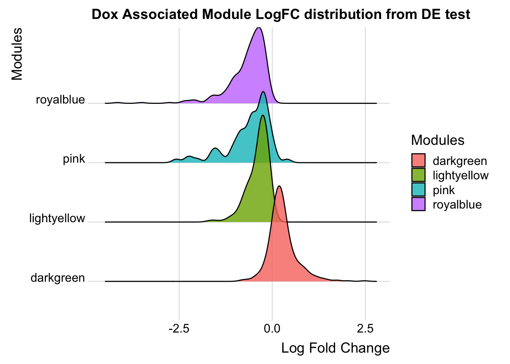
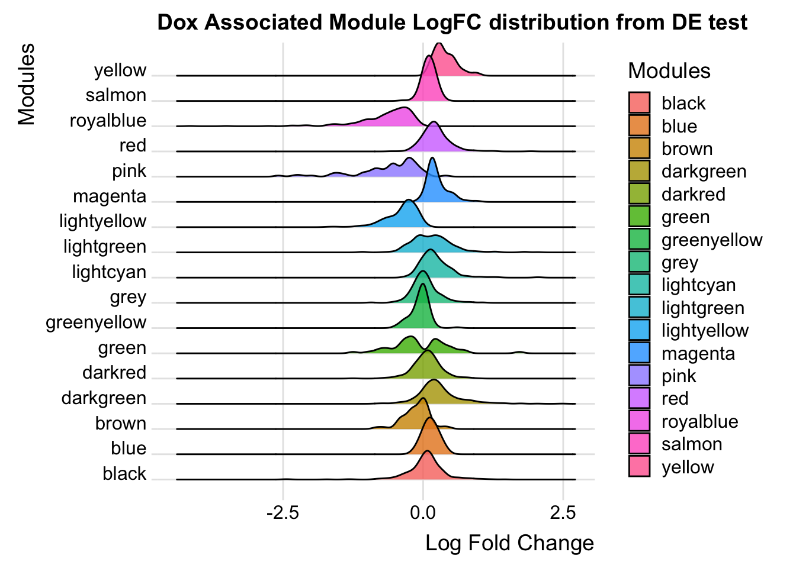
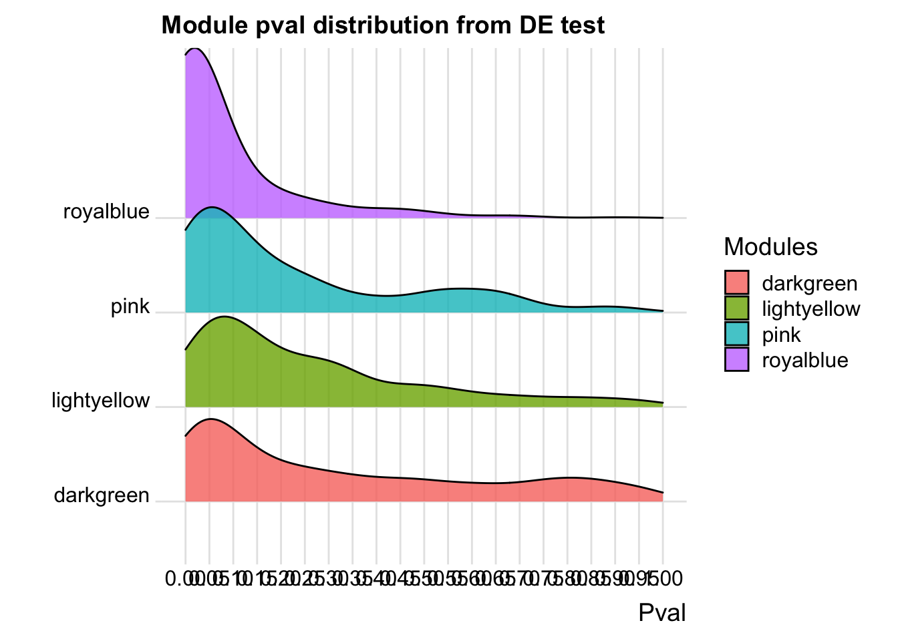
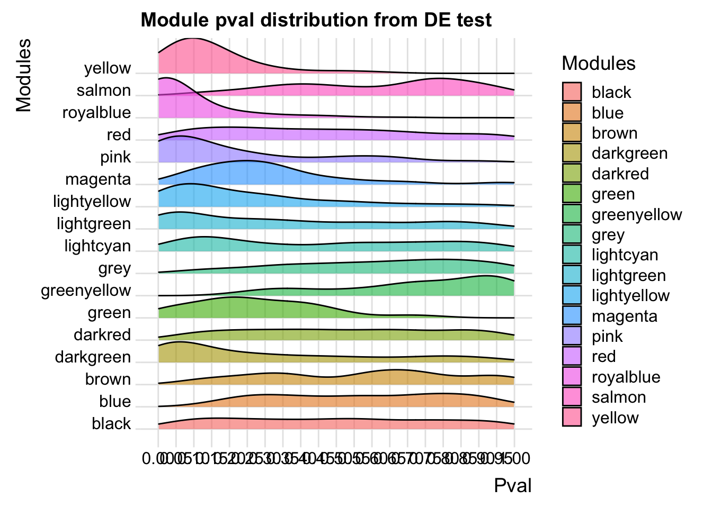

WPCNA_shallow_split_2
2023-12-06
Last updated: 2023-12-06
Checks: 7 0
Knit directory: myproject/
This reproducible R Markdown analysis was created with workflowr (version 1.7.1). The Checks tab describes the reproducibility checks that were applied when the results were created. The Past versions tab lists the development history.
Great! Since the R Markdown file has been committed to the Git repository, you know the exact version of the code that produced these results.
Great job! The global environment was empty. Objects defined in the global environment can affect the analysis in your R Markdown file in unknown ways. For reproduciblity it’s best to always run the code in an empty environment.
The command set.seed(20230911) was run prior to running
the code in the R Markdown file. Setting a seed ensures that any results
that rely on randomness, e.g. subsampling or permutations, are
reproducible.
Great job! Recording the operating system, R version, and package versions is critical for reproducibility.
Nice! There were no cached chunks for this analysis, so you can be confident that you successfully produced the results during this run.
Great job! Using relative paths to the files within your workflowr project makes it easier to run your code on other machines.
Great! You are using Git for version control. Tracking code development and connecting the code version to the results is critical for reproducibility.
The results in this page were generated with repository version b1e8ba8. See the Past versions tab to see a history of the changes made to the R Markdown and HTML files.
Note that you need to be careful to ensure that all relevant files for
the analysis have been committed to Git prior to generating the results
(you can use wflow_publish or
wflow_git_commit). workflowr only checks the R Markdown
file, but you know if there are other scripts or data files that it
depends on. Below is the status of the Git repository when the results
were generated:
Ignored files:
Ignored: .DS_Store
Ignored: analysis/.DS_Store
Note that any generated files, e.g. HTML, png, CSS, etc., are not included in this status report because it is ok for generated content to have uncommitted changes.
These are the previous versions of the repository in which changes were
made to the R Markdown (analysis/WPCNA_shallow_split_2.Rmd)
and HTML (docs/WPCNA_shallow_split_2.html) files. If you’ve
configured a remote Git repository (see ?wflow_git_remote),
click on the hyperlinks in the table below to view the files as they
were in that past version.
| File | Version | Author | Date | Message |
|---|---|---|---|---|
| Rmd | b1e8ba8 | Omar-Johnson | 2023-12-06 | updated code |
Load Libraries
Added funtions
remove_rows_with_nas <- function(data_frame) {
data_frame[rowSums(is.na(data_frame)) < 5, ]
}Steps
#* 1. Take Abundance values/counts
#* 2. Remove NA values from Abundance values
#* 3. Apply log2 transform to Abundance values
#* 4. Quantile normalize abundance values
#* 5. RUVs applied to account for technical variation
#* 6. Use Limma to model differential protein abundaance Read in Data
# Load your data
Protein_DF <- read.csv(file = "/Users/omarjohnson/Documents/Projects/Dox_Proteomics/Data/Data_Frames/Abundance.csv", header = TRUE)
# Include metadata about samples
Meta <- read.csv(file = "/Users/omarjohnson/Documents/Projects/Dox_Proteomics/Data/Data_Frames/Meta.csv", header = TRUE)Wrangle Data Frame
# Save the original
Full_DF <- Protein_DF
# Subset the columns referring to abundance
Protein_DF_Abundance <- Protein_DF[,c(4, 5:ncol(Protein_DF))]
# Check for duplicated rows
# Identify duplicated values
Protein_DF_Abundance$duplicated_name <- duplicated(Protein_DF_Abundance$Accession)
# This will return a logical vector where TRUE indicates the position of duplicates in the column.
# To see only rows with duplicated values, you can subset the dataframe like this:
duplicated_rows <- Protein_DF_Abundance[Protein_DF_Abundance$duplicated_name == TRUE, ]
print(duplicated_rows) Accession Abundance..F1..Sample..Dox..n.a Abundance..F3..Sample..Dox..n.a
61 P04264 3.87e+08 1.45e+08
276 P35908 NA NA
997 P04040 NA NA
Abundance..F5..Sample..Dox..Dox Abundance..F7..Sample..Dox..Dox
61 2.58e+08 7.07e+08
276 NA NA
997 NA NA
Abundance..F9..Sample..Dox..Dox Abundance..F2..Control..Veh..n.a
61 3.17e+08 1.19e+10
276 NA 5.31e+06
997 NA NA
Abundance..F4..Control..Veh..n.a Abundance..F6..Control..Veh..Veh
61 1.11e+09 8.03e+08
276 1.14e+06 NA
997 NA NA
Abundance..F8..Control..Veh..Veh Abundance..F10..Control..Veh..Veh
61 4.61e+08 5.45e+08
276 5.00e+05 4.90e+05
997 NA NA
duplicated_name
61 TRUE
276 TRUE
997 TRUE# We have 3 rows with duplicates, two of which have NA values. We will remove them now since we will go ahead
# and remove the duplicated rows later on anyways.
Protein_DF_Abundance <- Protein_DF_Abundance[- c(61, 276, 997), ]
# Make rownames of the data frame accession IDs
rownames(Protein_DF_Abundance) <- Protein_DF_Abundance$Accession
# Change colnames
colnames(Protein_DF_Abundance) [1] "Accession" "Abundance..F1..Sample..Dox..n.a"
[3] "Abundance..F3..Sample..Dox..n.a" "Abundance..F5..Sample..Dox..Dox"
[5] "Abundance..F7..Sample..Dox..Dox" "Abundance..F9..Sample..Dox..Dox"
[7] "Abundance..F2..Control..Veh..n.a" "Abundance..F4..Control..Veh..n.a"
[9] "Abundance..F6..Control..Veh..Veh" "Abundance..F8..Control..Veh..Veh"
[11] "Abundance..F10..Control..Veh..Veh" "duplicated_name" Protein_DF_Abundance <- Protein_DF_Abundance[, -c(1, 12)]
# Assuming column names of Protein_DF match with the rows in Meta
rownames(Meta) <- Meta$Samples
colnames(Protein_DF_Abundance) <- Meta$SamplesRemove NA values
#1. Find rows with any NA values
rows_with_na <- apply(Protein_DF_Abundance, 1, function(x) any(is.na(x))) %>% which()
rows_with_na <- as.numeric(rows_with_na)
Protein_DF_Abundance %>% dim()[1] 4501 10# 2. Remove rows with NA values
Protein_DF_Abundance <- Protein_DF_Abundance[-rows_with_na, ]
# 3. Sanity check
Protein_DF_Abundance %>% dim()[1] 3384 10Log2 transform
log2_norm_counts <- log2(Protein_DF_Abundance)Quantile Normalization
normalizedData <- limma::normalizeBetweenArrays(log2_norm_counts, method = "quantile")Prepare Data Object for RUVs
# counts need to be integer values and in a numeric matrix
counts <- as.matrix(normalizedData)
# Create a DataFrame for the phenoData
phenoData <- DataFrame(Meta)
# Now create the RangedSummarizedExperiment necessary for RUVs input
set <- SummarizedExperiment(assays = normalizedData, metadata =phenoData)RUVs Matrix
# Generate a background matrix where each set of replicates are in a row
# and null spaces where there are replicate mismatches get the value -1.
# This will be used in the RUVs function, which is the typeII method to
# remove unwanted variation in the RUVs package. This will be used for all
# RUVs permutations where the number of variation factors will be changed.
scIdx <- matrix(-1, nrow = 6, ncol = 3)
scIdx[1, 1:3] <- c(which(colnames(counts) %in% c("S6", "S8", "S10"))) # Control group- Technical reps Ind. 48-1
scIdx[2, 1:3] <- c(which(colnames(counts) %in% c("S5", "S7", "S9"))) # Dox group- Technical reps Ind. 48-1
scIdx[3, 1] <- c(which(colnames(counts) %in% c("S2"))) # Control group- Bio reps Ind. 77-1
scIdx[4, 1] <- c(which(colnames(counts) %in% c("S1"))) # Dox group- 77-1
scIdx[5, 1] <- c(which(colnames(counts) %in% c("S4"))) # Control group- Bio reps Ind. 87-1
scIdx[6, 1] <- c(which(colnames(counts) %in% c("S3"))) # Dox group- 87-1
scIdx [,1] [,2] [,3]
[1,] 8 9 10
[2,] 3 4 5
[3,] 6 -1 -1
[4,] 1 -1 -1
[5,] 7 -1 -1
[6,] 2 -1 -1Linear Modelling
# Apply RUVs function from RUVSeq and add to set object
set <- RUVSeq::RUVs(x = normalizedData, k = 1, scIdx = scIdx, isLog = TRUE)
RUV_1 <- set$W[,1]
set$W W_1
S1 0.14326547
S3 -0.08146518
S5 -0.25579041
S7 0.54847999
S9 -0.50097929
S2 0.15639944
S4 -0.04767015
S6 -0.35626503
S8 -0.19216750
S10 0.48449144phenoData$RUV_1 <- RUV_1
# Create Design Matrix
# phenoData$Cond <- factor(phenoData$Cond , levels = c("Control", "Dox"))
design <- model.matrix(~0 + Cond + RUV_1, phenoData)
design CondControl CondDox RUV_1
S1 0 1 0.14326547
S3 0 1 -0.08146518
S5 0 1 -0.25579041
S7 0 1 0.54847999
S9 0 1 -0.50097929
S2 1 0 0.15639944
S4 1 0 -0.04767015
S6 1 0 -0.35626503
S8 1 0 -0.19216750
S10 1 0 0.48449144
attr(,"assign")
[1] 1 1 2
attr(,"contrasts")
attr(,"contrasts")$Cond
[1] "contr.treatment"# rename columns
colnames(design) <- c('Control', "Dox", "RUV_1")
# Fit model
fit <- lmFit(set$normalizedCounts, design)
fit2 <- eBayes(fit)
# Make contrasts
cm <- makeContrasts(
DoxvNorm = Dox - Control,
levels = design)
# Model with contrasts
fit2 <- contrasts.fit(fit, cm)
fit2 <- eBayes(fit2, robust = TRUE, trend = TRUE)Warning: 3 very small variances detected, have been offset away from zero# Summarize
results_summary <- decideTests(fit2, adjust.method = "none", p.value = 0.05)
summary(results_summary) DoxvNorm
Down 300
NotSig 2882
Up 202# Toptable summary organized to contain results for all tested proteins
toptable_summary <- topTable(fit2, coef = "DoxvNorm",number = (nrow(set$normalizedCounts )), p.value = 1, adjust.method = "none")
toptable_summary$Protein <- rownames(toptable_summary)WPCNA- shallow cuts
# Create summarized experiment object
WGCNA_DF <- SummarizedExperiment(assays = set$normalizedCounts)
exp_filt <- filter_by_variance(WGCNA_DF, n = 3384)SFT power threshold
# Determine the soft power threshold to get scale free shape
sft <- SFT_fit(exp_filt, net_type = "signed", rsquared = 0.8, cor_method = "pearson")Warning: executing %dopar% sequentially: no parallel backend registeredWarning in eval(xpr, envir = envir): Some correlations are NA in block 1 : 3384
. Power SFT.R.sq slope truncated.R.sq mean.k. median.k. max.k.
1 3 0.20300 4.530 0.757 655.0 653.0 811
2 4 0.35300 4.960 0.444 459.0 455.0 633
3 5 0.40300 4.100 0.270 338.0 335.0 516
4 6 0.73400 2.230 0.734 259.0 255.0 433
5 7 0.56500 1.410 0.498 204.0 199.0 372
6 8 0.61600 1.030 0.875 164.0 159.0 326
7 9 0.55600 0.854 0.953 135.0 129.0 289
8 10 0.09660 0.501 0.934 112.0 107.0 259
9 11 0.00844 -0.121 0.918 94.8 88.8 235
10 12 0.16500 -0.490 0.951 80.9 74.9 214
11 13 0.33100 -0.720 0.950 69.8 63.6 196
12 14 0.44200 -0.869 0.950 60.8 54.5 181
13 15 0.53200 -0.975 0.955 53.3 47.0 167
14 16 0.59400 -1.060 0.967 47.0 40.7 156
15 17 0.65300 -1.140 0.972 41.7 35.5 145
16 18 0.69400 -1.220 0.973 37.3 31.3 136
17 19 0.72700 -1.270 0.975 33.4 27.6 128
18 20 0.74300 -1.330 0.972 30.1 24.5 120No power reached R-squared cut-off, now choosing max R-squared based powersft$power[1] 20power <- sft$power
sft$plot 
power[1] 20Modify workflow to have a simpler network
exp2gcn2_EDIT <- function (exp, net_type = "signed", module_merging_threshold = 0.8,
SFTpower = NULL, cor_method = "spearman", verbose = FALSE)
{
params <- list(net_type = net_type, module_merging_threshold = module_merging_threshold,
SFTpower = SFTpower, cor_method = cor_method)
norm.exp <- BioNERO:::handleSE(exp)
if (is.null(SFTpower)) {
stop("Please, specify the SFT power.")
}
if (verbose) {
message("Calculating adjacency matrix...")
}
cor_matrix <- BioNERO:::calculate_cor_adj(cor_method, norm.exp, SFTpower,
net_type)$cor
adj_matrix <- BioNERO:::calculate_cor_adj(cor_method, norm.exp, SFTpower,
net_type)$adj
gene_ids <- rownames(adj_matrix)
adj_matrix <- matrix(adj_matrix, nrow = nrow(adj_matrix))
rownames(adj_matrix) <- gene_ids
colnames(adj_matrix) <- gene_ids
if (verbose) {
message("Calculating topological overlap matrix (TOM)...")
}
tomtype <- BioNERO:::get_TOMtype(net_type)
TOM <- WGCNA::TOMsimilarity(adj_matrix, TOMType = tomtype)
dissTOM <- 1 - TOM
geneTree <- hclust(as.dist(dissTOM), method = "average")
if (verbose) {
message("Detecting coexpression modules...")
}
old.module_labels <- dynamicTreeCut::cutreeDynamicTree(dendro = geneTree, maxTreeHeight = 4 ,
minModuleSize = 30, deepSplit = FALSE)
nmod <- length(unique(old.module_labels))
palette <- rev(WGCNA::standardColors(nmod))
old.module_colors <- WGCNA::labels2colors(old.module_labels,
colorSeq = palette)
if (verbose) {
message("Calculating module eigengenes (MEs)...")
}
old.MElist <- WGCNA::moduleEigengenes(t(norm.exp), colors = old.module_colors,
softPower = SFTpower)
old.MEs <- old.MElist$eigengenes
MEDiss1 <- 1 - cor(old.MEs)
old.METree <- hclust(as.dist(MEDiss1), method = "average")
MEDissThreshold <- 1 - module_merging_threshold
if (verbose) {
message("Merging similar modules...")
}
if (cor_method == "pearson") {
merge1 <- WGCNA::mergeCloseModules(t(norm.exp), old.module_colors,
cutHeight = MEDissThreshold, verbose = 0, colorSeq = palette)
}
else if (cor_method == "spearman") {
merge1 <- WGCNA::mergeCloseModules(t(norm.exp), old.module_colors,
cutHeight = MEDissThreshold, verbose = 0, corOptions = list(use = "p",
method = "spearman"), colorSeq = palette)
}
else if (cor_method == "biweight") {
merge1 <- WGCNA::mergeCloseModules(t(norm.exp), old.module_colors,
cutHeight = MEDissThreshold, verbose = 0, corFnc = bicor,
colorSeq = palette)
}
else {
stop("Please, specify a correlation method. One of 'spearman', 'pearson' or 'biweight'.")
}
new.module_colors <- merge1$colors
new.MEs <- merge1$newMEs
new.METree <- hclust(as.dist(1 - cor(new.MEs)), method = "average")
genes_and_modules <- as.data.frame(cbind(gene_ids, new.module_colors))
colnames(genes_and_modules) <- c("Genes", "Modules")
if (verbose) {
message("Calculating intramodular connectivity...")
}
kwithin <- WGCNA::intramodularConnectivity(adj_matrix, new.module_colors)
result.list <- list(adjacency_matrix = adj_matrix, MEs = new.MEs,
genes_and_modules = genes_and_modules, kIN = kwithin,
correlation_matrix = cor_matrix, params = params, dendro_plot_objects = list(tree = geneTree,
unmerged = old.module_colors))
return(result.list)
}Generate network with max merge threshold
net <- exp2gcn2_EDIT(
exp_filt, net_type = "signed", module_merging_threshold = 0.99, SFTpower = power,
cor_method = "pearson")Warning in cor(t(norm.exp), method = "pearson"): the standard deviation is zero
Warning in cor(t(norm.exp), method = "pearson"): the standard deviation is zero..connectivity..
..matrix multiplication (system BLAS)..
..normalization..
..done.# Dendogram
plot_dendro_and_colors(net )
NULL# Eigengene networks
plot_eigengene_network(net)
NULL# Genes per module
plot_ngenes_per_module(net)
Generate network with desired merge threshold
net <- exp2gcn2_EDIT(
exp_filt, net_type = "signed", module_merging_threshold = 0.9, SFTpower = power,
cor_method = "pearson")Warning in cor(t(norm.exp), method = "pearson"): the standard deviation is zero
Warning in cor(t(norm.exp), method = "pearson"): the standard deviation is zero..connectivity..
..matrix multiplication (system BLAS)..
..normalization..
..done.# Dendogram
plot_dendro_and_colors(net )
NULL# Eigengene networks
plot_eigengene_network(net)
NULL# Genes per module
plot_ngenes_per_module(net)
Define trat and get eigen proteins
WGCNA_DF$trait <- c(1,1,1,1,1,0,0,0,0,0)
names(WGCNA_DF$trait) <- c("S1", "S3", "S5", "S7", "S9", "S2", "S4", "S6", "S8", "S10")
eigenmatrix <- net$MEs %>% as.matrix()
eigenmatrix MEdarkgreen MEgreenyellow MEmagenta MEgreen MEblack
S1 0.18210620 -0.005457502 0.0546504186 0.23785319 0.33106572
S3 0.09718442 -0.655438915 -0.3541181487 -0.40451119 -0.54702648
S5 0.47377047 0.268889367 0.3926743828 -0.09393906 0.19215729
S7 0.37887364 0.167144729 0.3404051718 -0.14945040 0.16136285
S9 0.28268140 0.099590513 0.3214629391 -0.16090425 0.08620987
S2 -0.14172225 0.133528742 -0.0307145452 0.46446037 0.36795956
S4 -0.45770935 -0.577675132 -0.7049856193 -0.58826295 -0.61902191
S6 -0.10370053 0.187073292 -0.0007939648 0.22622080 0.03890218
S8 -0.44529220 0.208263512 -0.0158109910 0.23026588 0.01151404
S10 -0.26619180 0.174081395 -0.0027696432 0.23826761 -0.02312313
MEsalmon MElightgreen MEyellow MEblue MEred MEdarkred
S1 0.542569499 -0.532070908 -0.1860911 -0.200268432 -0.244062683 0.61376944
S3 -0.294753301 0.133852972 0.5204434 0.606669131 0.397994490 0.12868780
S5 0.083283562 0.392477389 0.2639844 -0.047183088 0.157919249 -0.17542230
S7 0.009538343 0.323113109 0.2405889 -0.025545978 0.106267829 -0.12726682
S9 -0.038409580 0.283818231 0.1258283 0.006566511 0.135611486 -0.22293667
S2 0.564028253 -0.598142839 -0.3915650 -0.476664129 -0.789311176 0.54523021
S4 -0.487479730 0.038774557 0.3389226 0.550788180 0.314929917 0.02152929
S6 -0.070323396 -0.004717392 -0.2792831 -0.128104270 -0.072046134 -0.19659221
S8 -0.185490529 -0.019443983 -0.2680474 -0.165087386 -0.002735437 -0.26719162
S10 -0.122963121 -0.017661136 -0.3647809 -0.121170540 -0.004567542 -0.31980710
MEbrown MElightcyan MEpink MElightyellow MEroyalblue MEgrey
S1 0.20642078 0.16555633 -0.08055571 -0.154632644 -0.4139420 -0.0003025242
S3 0.33116917 0.61995623 -0.34137266 0.309740607 -0.2748380 0.0040883740
S5 -0.12029380 -0.15360435 -0.21437397 -0.367098522 -0.4156534 0.0003822208
S7 -0.18038246 -0.06386671 -0.18266541 -0.469429132 -0.2406861 -0.0036422147
S9 -0.56619499 -0.03109400 -0.24024156 -0.375568753 -0.1299847 -0.0007300618
S2 0.09492993 -0.05626903 0.81404455 0.001984603 0.1126542 0.0040695629
S4 0.59639333 0.49138129 0.23786812 0.532176407 0.2150345 -0.0034138146
S6 -0.05482123 -0.32175845 0.11219158 0.107575233 0.3172382 -0.0049835507
S8 0.02699682 -0.32301622 -0.08849206 0.169108022 0.4411122 0.0028889389
S10 -0.33421753 -0.32728509 -0.01640288 0.246144180 0.3890651 0.0016430694Trait-module correlation test
correlationResults <- cor(eigenmatrix, WGCNA_DF$trait, method="pearson")
pvalues <- sapply(1:ncol(eigenmatrix), function(column) cor.test(eigenmatrix[,column], WGCNA_DF$trait)$p.value )
WGCNA_DF$trait <- as.matrix(WGCNA_DF$trait)
Modeigen <- as.matrix(net$MEs)
# Trait data frame
trait_data <- data.frame(
ME = correlationResults %>% rownames(),
Value = correlationResults[,1],
PValue = pvalues
)
trait_data$neglogP <- -log(trait_data$PValue)
trait_data ME Value PValue neglogP
MEdarkgreen MEdarkgreen 0.89468179 4.731737e-04 7.65604799
MEgreenyellow MEgreenyellow -0.07922885 8.277707e-01 0.18901907
MEmagenta MEmagenta 0.47755121 1.627645e-01 1.81545108
MEgreen MEgreen -0.36110157 3.052819e-01 1.18651965
MEblack MEblack 0.14152410 6.965426e-01 0.36162639
MEsalmon MEsalmon 0.19114610 5.968131e-01 0.51615123
MElightgreen MElightgreen 0.38022644 2.784303e-01 1.27858762
MEyellow MEyellow 0.61016390 6.102503e-02 2.79647117
MEblue MEblue 0.21518550 5.504793e-01 0.59696584
MEred MEred 0.35020984 3.211616e-01 1.13581099
MEdarkred MEdarkred 0.13713624 7.055927e-01 0.34871708
MEbrown MEbrown -0.20825578 5.636895e-01 0.57325176
MElightcyan MElightcyan 0.33959542 3.370407e-01 1.08755149
MEpink MEpink -0.66990279 3.406547e-02 3.37947099
MElightyellow MElightyellow -0.66849819 3.458275e-02 3.36440039
MEroyalblue MEroyalblue -0.93293782 8.156486e-05 9.41411198
MEgrey MEgrey -0.01326124 9.709961e-01 0.02943278# Plot correlation across modules
ggplot(trait_data, aes(x = ME, y = neglogP, color = Value)) +
geom_segment(aes(xend = ME, yend = 0), linetype = "solid") +
geom_point(size = 10) +
scale_color_gradient(
low = "red",
high = "blue",
name = "corr",
limits = c(-1, 1),
breaks = seq(-1, 1, by = 0.5)
) +
labs(x = "Module", y = "-log(P-value)", title = "Module correlation with DOX treatment") +
theme_minimal() +
theme(axis.text.x = element_text(angle = 45, hjust = 1)) +
geom_hline(yintercept = 2.995732, color = "black", linetype = "dashed") +
geom_text(aes(x = 0, y = 3.5, label = "P-Val Threshold"), hjust = -0.1, vjust = 1.5)
General wrangling
# Get modules that significantly associate with DOX treatment
Signifigant_modules <- trait_data[trait_data$PValue < 0.05, ]$ME
# Get your genes/proteins and modules DF
Gene_mod_DF <- net$genes_and_modules
# Module data gets merged with toptable
toptable_summary %>% head() logFC AveExpr t P.Value adj.P.Val B
Q15327 -3.5105795 23.99385 -16.206595 1.439598e-08 1.439598e-08 9.198952
O76021 -2.1010283 24.26413 -13.346701 9.464205e-08 9.464205e-08 7.858831
Q969Q1 -4.1607271 20.89793 -9.786021 1.771490e-06 1.771490e-06 5.466554
Q92841 -0.7680309 27.58532 -9.120228 3.274667e-06 3.274667e-06 4.925168
P67809 -1.0832634 26.08848 -9.068268 3.560682e-06 3.560682e-06 4.850881
Q9BQG0 -2.1975800 23.65668 -9.036430 3.676428e-06 3.676428e-06 4.822314
Protein
Q15327 Q15327
O76021 O76021
Q969Q1 Q969Q1
Q92841 Q92841
P67809 P67809
Q9BQG0 Q9BQG0Toptable_Modules <- merge(toptable_summary,
Gene_mod_DF, by.x = "Protein", by.y = "Genes")
# Get the corresponding Gene name IDs
mart <- useMart("ensembl", dataset = "hsapiens_gene_ensembl")
results_Pro_names <- getBM(filters = "uniprotswissprot",
attributes = c("uniprotswissprot", "hgnc_symbol"),
values = toptable_summary$Protein,
mart = mart)
merged_results_Pro_names_AND_Toptable_for_ENZYME <- merge(toptable_summary, results_Pro_names, by.x = "Protein", by.y = "uniprotswissprot")
ENZYME_DF_Toptable <- merged_results_Pro_names_AND_Toptable_for_ENZYME
DE_Enzymes <- ENZYME_DF_Toptable[(ENZYME_DF_Toptable$P.Value < 0.05) & (!is.na(ENZYME_DF_Toptable$ENZYME)), ]$hgnc_symbol
All_Proteins_ENZYMES <- ENZYME_DF_Toptable[(!is.na(ENZYME_DF_Toptable$ENZYME)), ]$hgnc_symbol
# Plotting LogFC in significant modules module
Significant_modules_NoME <- stringr::str_replace(Signifigant_modules, "^ME", "")
Toptable_Modules_Sig <- Toptable_Modules[Toptable_Modules$Modules %in% Significant_modules_NoME, ]
# n-modules total
Toptable_Modules$Modules %>% unique() %>% length()[1] 17# n-sig modules
Signifigant_modules %>% length()[1] 4# Percent sig modules
(Signifigant_modules %>% length()) / (Toptable_Modules$Modules %>% unique() %>% length())[1] 0.2352941# Get modules that significantly associate with DOX treatment
Signifigant_modules <- trait_data[trait_data$PValue < 0.05, ]$ME
# Get your genes/proteins and modules DF
Gene_mod_DF <- net$genes_and_modules
# Subset genes/proteins and modules DF by the significantly correlated modules to DOX
Sig_Gene_mod_DF <- Gene_mod_DF[Gene_mod_DF$Modules %in% Signifigant_modules, ]
# Module data gets merged with toptable
Toptable_Modules <- merge(toptable_summary,
Gene_mod_DF, by.x = "Protein", by.y = "Genes")
Toptable_Modules %>% head() Protein logFC AveExpr t P.Value adj.P.Val B
1 A0A0B4J2D5 0.183555215 28.46018 2.024992979 0.0699426 0.0699426 -4.632753
2 A0FGR8 0.201889154 23.26550 0.730591393 0.4816055 0.4816055 -6.193199
3 A1A4S6 1.195526327 19.15569 1.248949692 0.2398095 0.2398095 -5.695109
4 A1L0T0 -0.193311424 24.34047 -1.611750825 0.1376069 0.1376069 -5.234984
5 A2RRP1 -0.250688318 24.19697 -1.786081518 0.1040252 0.1040252 -4.989523
6 A3KMH1 0.001585613 25.50568 0.009025006 0.9929747 0.9929747 -6.472078
Modules
1 darkgreen
2 red
3 lightcyan
4 royalblue
5 darkred
6 darkredToptable_Modules %>% dim()[1] 3384 8Combining diff abundant test with modules
# LogFC Ridge plot
ggplot(Toptable_Modules_Sig, aes(x = logFC, y = Modules, fill = Modules)) +
ggridges::geom_density_ridges(alpha = 0.8) +
labs(title = "Dox Associated Module LogFC distribution from DE test",
x = "Log Fold Change",
y = "Modules") +
ggridges::theme_ridges() Picking joint bandwidth of 0.107
# LogFC Ridge plot
ggplot(Toptable_Modules, aes(x = logFC, y = Modules, fill = Modules)) +
ggridges::geom_density_ridges(alpha = 0.8) +
labs(title = "Dox Associated Module LogFC distribution from DE test",
x = "Log Fold Change",
y = "Modules") +
ggridges::theme_ridges() Picking joint bandwidth of 0.0783
# Pval Ridge plot
ggplot(Toptable_Modules_Sig, aes(x = P.Value, y = Modules, fill = Modules)) +
ggridges::geom_density_ridges(alpha = 0.8) +
labs(title = "Module pval distribution from DE test",
x = "Pval",
y = "") +
ggridges::theme_ridges()+
scale_x_continuous(breaks = seq(0, 1, by = 0.05), limits = c(0, 1))Picking joint bandwidth of 0.0615
# Pval Ridge plot
ggplot(Toptable_Modules, aes(x = P.Value, y = Modules, fill = Modules)) +
ggridges::geom_density_ridges(alpha = 0.6) +
labs(title = "Module pval distribution from DE test",
x = "Pval",
y = "Modules") +
ggridges::theme_ridges()+
scale_x_continuous(breaks = seq(0, 1, by = 0.05), limits = c(0, 1))Picking joint bandwidth of 0.0752
# Plotting LogFC between DE and non DE proteins
Toptable_Modules$DE_or_Not <- Toptable_Modules$P.Value < 0.05
# Calculate percentage of DE genes for each module
DE_Mod_result <- Toptable_Modules %>%
group_by(Modules) %>%
summarize(
total_genes = n(),
DE_genes = sum(P.Value < 0.05),
percent_DE = (DE_genes / total_genes) * 100
)
print(DE_Mod_result)# A tibble: 17 × 4
Modules total_genes DE_genes percent_DE
<chr> <int> <int> <dbl>
1 black 454 17 3.74
2 blue 109 0 0
3 brown 47 0 0
4 darkgreen 399 90 22.6
5 darkred 317 7 2.21
6 green 52 7 13.5
7 greenyellow 89 0 0
8 grey 173 1 0.578
9 lightcyan 188 13 6.91
10 lightgreen 279 55 19.7
11 lightyellow 305 53 17.4
12 magenta 76 1 1.32
13 pink 69 21 30.4
14 red 347 16 4.61
15 royalblue 314 211 67.2
16 salmon 115 0 0
17 yellow 51 10 19.6 # Plot
ggplot(DE_Mod_result, aes(x = Modules, y = percent_DE, fill = Modules)) +
geom_bar(stat = "identity") +
labs(
x = "Module",
y = "Percentage of DE genes",
title = "Percentage of DE genes in each module",
fill = "Module"
) +
theme_minimal() +
theme(axis.text.x = element_text(angle = 45, hjust = 1))
# Compute complementary percentage for non-DE genes
DE_Mod_result$percent_nonDE <- 100 - DE_Mod_result$percent_DE
# Reshape data to long format
long_data <- DE_Mod_result %>%
pivot_longer(cols = c(percent_DE, percent_nonDE),
names_to = "type",
values_to = "percentage")
# Plot stacked bar chart
ggplot(long_data, aes(x = Modules, y = percentage, fill = type)) +
geom_bar(stat = "identity") +
labs(
x = "Module",
y = "Percentage",
title = "Percentage of DE and non-DE genes in each module",
fill = "Type"
) +
theme_minimal() +
theme(axis.text.x = element_text(angle = 45, hjust = 1))+
scale_y_continuous(breaks = rev(seq(0, 100, by = 10)))
Significant_modules_NoME[1] "darkgreen" "pink" "lightyellow" "royalblue" metatestDF <- phenoData$Cond %>% as.data.frame()GO enrichment acrross dox correlated modules
hubs <- get_hubs_gcn(WGCNA_DF, net)Warning in WGCNA::signedKME(t(exp), MEs, outputColumnName = ""): Some genes are
constant. Hint: consider removing constant columns from datExpr.ontology_categories <- c("ALL")
# Loop over each module and ontology category
for (module in Significant_modules_NoME) {
# Extract hub genes for the current module
module_hubs <- hubs[hubs$Module == module, ]$Gene
# All module proteins
module_proteins <- Toptable_Modules[(Toptable_Modules$Modules == module), ]$Protein
# Get gene names for the proteins in the module
module_genes <- ENZYME_DF_Toptable[ENZYME_DF_Toptable$Protein %in% module_proteins, ]$hgnc_symbol
# Define background genes
background_genes_mod <- ENZYME_DF_Toptable$hgnc_symbol
for (ont in ontology_categories) {
# GO Enrichment
go_enrichment <- enrichGO(gene = module_genes,
OrgDb = org.Hs.eg.db,
keyType = "SYMBOL",
universe = background_genes_mod,
ont = ont,
pvalueCutoff = 1,
qvalueCutoff = 1)
# Plotting the results
# Plotting the results
p <- barplot(go_enrichment, showCategory = 10) +
ggtitle(paste("Module:", module, "- Ontology:", ont))
print(p)
}
}


Protein corrrelation plots within modules
# Remove edges based on optimal scale-free topology fit
edges_filtered <- get_edge_list(net, module = c("darkgreen", "pink", "lightyellow", "royalblue"), filter = TRUE)The correlation threshold that best fits the scale-free topology is 0.9
## The correlation threshold that best fits the scale-free topology is 0.7
dim(edges_filtered)[1] 3875 3## [1] 588 3
#### Network for all ####
# Remove edges based on minimum correlation
edges_filtered <- get_edge_list(
net, module = c("darkgreen", "pink", "lightyellow", "royalblue"),
filter = TRUE, method = "min_cor", rcutoff = 0.93,
check_SFT = TRUE
)Your graph fits the scale-free topology. P-value:0.999999905427657dim(edges_filtered)[1] 1515 3plot_gcn(
edgelist_gcn = edges_filtered,
net = net,
color_by = "module",
hubs = hubs,
top_n_hubs = 30,
show_labels = "tophubs"
)Warning: ggrepel: 23 unlabeled data points (too many overlaps). Consider
increasing max.overlaps
Network darkgreen
edges_filtered <- get_edge_list(
net, module = c("darkgreen" ),
filter = TRUE, method = "min_cor", rcutoff = 0.9,
check_SFT = TRUE
)Your graph fits the scale-free topology. P-value:0.864905208343156dim(edges_filtered)[1] 908 3plot_gcn(
edgelist_gcn = edges_filtered,
net = net,
color_by = "module",
hubs = hubs,
top_n_hubs = 30,
show_labels = "tophubs"
)Warning: ggrepel: 10 unlabeled data points (too many overlaps). Consider
increasing max.overlaps
Network pink
edges_filtered <- get_edge_list(
net, module = c( "pink"),
filter = TRUE, method = "min_cor", rcutoff = 0.8,
check_SFT = TRUE
)Your graph fits the scale-free topology. P-value:0.999999982872347dim(edges_filtered)[1] 348 3plot_gcn(
edgelist_gcn = edges_filtered,
net = net,
color_by = "module",
hubs = hubs,
top_n_hubs = 30,
show_labels = "tophubs"
)Warning: ggrepel: 5 unlabeled data points (too many overlaps). Consider
increasing max.overlaps
Network lightyellow
edges_filtered <- get_edge_list(
net, module = c("lightyellow" ),
filter = TRUE, method = "min_cor", rcutoff = 0.92,
check_SFT = TRUE
)Your graph fits the scale-free topology. P-value:0.99999999996731dim(edges_filtered)[1] 394 3plot_gcn(
edgelist_gcn = edges_filtered,
net = net,
color_by = "module",
hubs = hubs,
top_n_hubs = 30,
show_labels = "tophubs"
)Warning: ggrepel: 25 unlabeled data points (too many overlaps). Consider
increasing max.overlaps
Network royalblue
edges_filtered <- get_edge_list(
net, module = c("royalblue"),
filter = TRUE, method = "min_cor", rcutoff = 0.94,
check_SFT = TRUE
)Your graph fits the scale-free topology. P-value:0.999999990710176dim(edges_filtered)[1] 555 3plot_gcn(
edgelist_gcn = edges_filtered,
net = net,
color_by = "module",
hubs = hubs,
top_n_hubs = 30,
show_labels = "tophubs"
)Warning: ggrepel: 30 unlabeled data points (too many overlaps). Consider
increasing max.overlaps
sessionInfo()R version 4.2.0 (2022-04-22)
Platform: x86_64-apple-darwin17.0 (64-bit)
Running under: macOS Big Sur/Monterey 10.16
Matrix products: default
BLAS: /Library/Frameworks/R.framework/Versions/4.2/Resources/lib/libRblas.0.dylib
LAPACK: /Library/Frameworks/R.framework/Versions/4.2/Resources/lib/libRlapack.dylib
locale:
[1] en_US.UTF-8/en_US.UTF-8/en_US.UTF-8/C/en_US.UTF-8/en_US.UTF-8
attached base packages:
[1] grid stats4 stats graphics grDevices utils datasets
[8] methods base
other attached packages:
[1] impute_1.70.0
[2] WGCNA_1.72-1
[3] fastcluster_1.2.3
[4] dynamicTreeCut_1.63-1
[5] BioNERO_1.4.2
[6] reshape2_1.4.4
[7] ggridges_0.5.4
[8] biomaRt_2.52.0
[9] ggvenn_0.1.10
[10] UpSetR_1.4.0
[11] DOSE_3.22.1
[12] variancePartition_1.26.0
[13] clusterProfiler_4.4.4
[14] pheatmap_1.0.12
[15] qvalue_2.28.0
[16] Homo.sapiens_1.3.1
[17] TxDb.Hsapiens.UCSC.hg19.knownGene_3.2.2
[18] org.Hs.eg.db_3.15.0
[19] GO.db_3.15.0
[20] OrganismDbi_1.38.1
[21] GenomicFeatures_1.48.4
[22] AnnotationDbi_1.58.0
[23] cluster_2.1.4
[24] ggfortify_0.4.16
[25] lubridate_1.9.2
[26] forcats_1.0.0
[27] stringr_1.5.0
[28] dplyr_1.1.2
[29] purrr_1.0.2
[30] readr_2.1.4
[31] tidyr_1.3.0
[32] tibble_3.2.1
[33] ggplot2_3.4.3
[34] tidyverse_2.0.0
[35] RColorBrewer_1.1-3
[36] RUVSeq_1.30.0
[37] edgeR_3.38.4
[38] limma_3.52.4
[39] EDASeq_2.30.0
[40] ShortRead_1.54.0
[41] GenomicAlignments_1.32.1
[42] SummarizedExperiment_1.26.1
[43] MatrixGenerics_1.8.1
[44] matrixStats_1.0.0
[45] Rsamtools_2.12.0
[46] GenomicRanges_1.48.0
[47] Biostrings_2.64.1
[48] GenomeInfoDb_1.32.4
[49] XVector_0.36.0
[50] IRanges_2.30.1
[51] S4Vectors_0.34.0
[52] BiocParallel_1.30.4
[53] Biobase_2.56.0
[54] BiocGenerics_0.42.0
[55] workflowr_1.7.1
loaded via a namespace (and not attached):
[1] rappdirs_0.3.3 rtracklayer_1.56.1 minet_3.54.0
[4] R.methodsS3_1.8.2 coda_0.19-4 bit64_4.0.5
[7] knitr_1.43 aroma.light_3.26.0 DelayedArray_0.22.0
[10] R.utils_2.12.2 rpart_4.1.19 data.table_1.14.8
[13] hwriter_1.3.2.1 KEGGREST_1.36.3 RCurl_1.98-1.12
[16] doParallel_1.0.17 generics_0.1.3 preprocessCore_1.58.0
[19] callr_3.7.3 RhpcBLASctl_0.23-42 RSQLite_2.3.1
[22] shadowtext_0.1.2 bit_4.0.5 tzdb_0.4.0
[25] enrichplot_1.16.2 xml2_1.3.5 httpuv_1.6.11
[28] viridis_0.6.4 xfun_0.40 hms_1.1.3
[31] jquerylib_0.1.4 evaluate_0.21 promises_1.2.1
[34] fansi_1.0.4 restfulr_0.0.15 progress_1.2.2
[37] caTools_1.18.2 dbplyr_2.3.3 htmlwidgets_1.6.2
[40] igraph_1.5.1 DBI_1.1.3 ggnewscale_0.4.9
[43] backports_1.4.1 annotate_1.74.0 aod_1.3.2
[46] deldir_1.0-9 vctrs_0.6.3 abind_1.4-5
[49] cachem_1.0.8 withr_2.5.0 ggforce_0.4.1
[52] checkmate_2.2.0 treeio_1.20.2 prettyunits_1.1.1
[55] ape_5.7-1 lazyeval_0.2.2 crayon_1.5.2
[58] genefilter_1.78.0 labeling_0.4.2 pkgconfig_2.0.3
[61] tweenr_2.0.2 nlme_3.1-163 nnet_7.3-19
[64] rlang_1.1.1 lifecycle_1.0.3 downloader_0.4
[67] filelock_1.0.2 BiocFileCache_2.4.0 rprojroot_2.0.3
[70] polyclip_1.10-4 graph_1.74.0 Matrix_1.5-4.1
[73] aplot_0.2.0 NetRep_1.2.7 boot_1.3-28.1
[76] base64enc_0.1-3 GlobalOptions_0.1.2 whisker_0.4.1
[79] processx_3.8.2 png_0.1-8 viridisLite_0.4.2
[82] rjson_0.2.21 bitops_1.0-7 getPass_0.2-2
[85] R.oo_1.25.0 ggnetwork_0.5.12 KernSmooth_2.23-22
[88] blob_1.2.4 shape_1.4.6 jpeg_0.1-10
[91] gridGraphics_0.5-1 scales_1.2.1 memoise_2.0.1
[94] magrittr_2.0.3 plyr_1.8.8 gplots_3.1.3
[97] zlibbioc_1.42.0 compiler_4.2.0 scatterpie_0.2.1
[100] BiocIO_1.6.0 clue_0.3-64 intergraph_2.0-3
[103] lme4_1.1-34 cli_3.6.1 patchwork_1.1.3
[106] ps_1.7.5 htmlTable_2.4.1 Formula_1.2-5
[109] mgcv_1.9-0 MASS_7.3-60 tidyselect_1.2.0
[112] stringi_1.7.12 highr_0.10 yaml_2.3.7
[115] GOSemSim_2.22.0 locfit_1.5-9.8 latticeExtra_0.6-30
[118] ggrepel_0.9.3 sass_0.4.7 fastmatch_1.1-4
[121] tools_4.2.0 timechange_0.2.0 parallel_4.2.0
[124] circlize_0.4.15 rstudioapi_0.15.0 foreign_0.8-84
[127] foreach_1.5.2 git2r_0.32.0 gridExtra_2.3
[130] farver_2.1.1 ggraph_2.1.0 digest_0.6.33
[133] BiocManager_1.30.22 networkD3_0.4 Rcpp_1.0.11
[136] broom_1.0.5 later_1.3.1 httr_1.4.7
[139] ComplexHeatmap_2.12.1 GENIE3_1.18.0 Rdpack_2.5
[142] colorspace_2.1-0 XML_3.99-0.14 fs_1.6.3
[145] splines_4.2.0 statmod_1.5.0 yulab.utils_0.0.8
[148] RBGL_1.72.0 tidytree_0.4.5 graphlayouts_1.0.0
[151] ggplotify_0.1.2 xtable_1.8-4 jsonlite_1.8.7
[154] nloptr_2.0.3 ggtree_3.4.4 tidygraph_1.2.3
[157] ggfun_0.1.2 R6_2.5.1 Hmisc_5.1-0
[160] pillar_1.9.0 htmltools_0.5.6 glue_1.6.2
[163] fastmap_1.1.1 minqa_1.2.5 codetools_0.2-19
[166] fgsea_1.22.0 utf8_1.2.3 sva_3.44.0
[169] lattice_0.21-8 bslib_0.5.1 network_1.18.1
[172] pbkrtest_0.5.2 curl_5.0.2 gtools_3.9.4
[175] interp_1.1-4 survival_3.5-7 statnet.common_4.9.0
[178] rmarkdown_2.24 munsell_0.5.0 GetoptLong_1.0.5
[181] DO.db_2.9 GenomeInfoDbData_1.2.8 iterators_1.0.14
[184] gtable_0.3.4 rbibutils_2.2.15